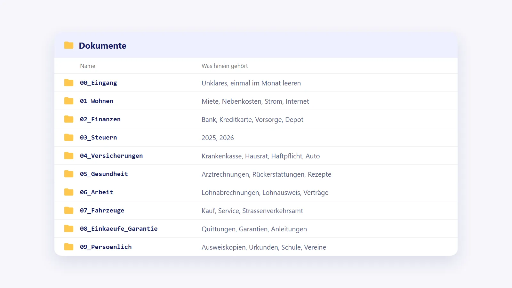
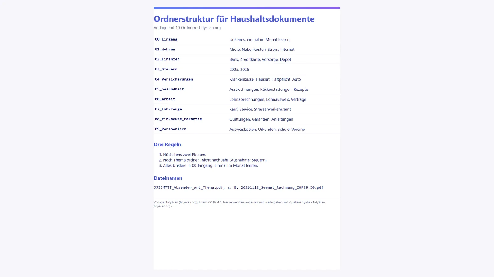

Ordnerstruktur für Haushaltsdokumente, mit Vorlage
Aktualisiert am 18. November 2026 · Silvan, Gründer von TidyScan · 6 Min. Lesezeit
Die meisten digitalen Ablagen scheitern nicht am Scannen, sondern an der Ordnerstruktur. Entweder gibt es nur einen Ordner «Scans», in dem alles liegt, oder es gibt so viele Unterordner, dass man bei jedem Dokument überlegen muss, wohin es gehört. Diese Ordnerstruktur liegt dazwischen: zehn Ordner, die fast jeden Haushalt abdecken, und drei Regeln, damit sie auch in fünf Jahren noch funktioniert. Am Ende der Seite gibt es alles zum Herunterladen. Ordnerstruktur: Vorlage als ZIP mit leeren Ordnern und als PDF zum Ausdrucken.
Drei Regeln für ein Ablagesystem, das hält
1. Höchstens zwei Ebenen. Ein Hauptordner pro Lebensbereich, darin höchstens eine weitere Ebene. Jede zusätzliche Ebene ist eine Entscheidung mehr beim Ablegen und eine Stelle mehr, an der ein Dokument verloren gehen kann.
2. Nach Thema ordnen, nicht nach Jahr. Wer «2025», «2026» als oberste Ebene nimmt, sucht später die Hausratversicherung in fünf verschiedenen Ordnern. Das Jahr steht ohnehin im Dateinamen (siehe Dokumente richtig benennen). Einzige Ausnahme: die Steuern, weil die Steuererklärung jahresweise funktioniert.
3. Ein Eingangsordner für alles Unklare. Was du nicht sofort zuordnen kannst, kommt in 00_Eingang. Einmal im Monat leerst du ihn. So bleibt die digitale Ablage sauber, ohne dass jedes Dokument eine Grundsatzfrage wird.
Die Ordnerstruktur: Vorlage mit zehn Ordnern
| Ordner | Was hinein gehört |
|---|---|
00_Eingang | Alles, was du nicht sofort zuordnen kannst |
01_Wohnen | Miete oder Hypothek, Nebenkosten, Strom, Internet |
02_Finanzen | Bank, Kreditkarte, Vorsorge, Depot |
03_Steuern | Unterordner pro Jahr: 2025, 2026 |
04_Versicherungen | Krankenkasse, Hausrat, Haftpflicht, Auto |
05_Gesundheit | Arztrechnungen, Rückerstattungen, Rezepte |
06_Arbeit | Lohnabrechnungen, Lohnausweis, Verträge, Zeugnisse |
07_Fahrzeuge | Kauf, Service, Strassenverkehrsamt |
08_Einkaeufe_Garantie | Quittungen, Garantien, Anleitungen |
09_Persoenlich | Ausweiskopien, Urkunden, Schule, Vereine |

Warum Nummern vor den Namen? Damit die Reihenfolge auf jedem Gerät gleich bleibt. Ohne Nummern sortiert Windows anders als das Handy, und Eingang rutscht irgendwo in die Mitte.
Warum ohne Umlaute? Einkaeufe statt Einkäufe vermeidet Ärger, wenn du die Ordner zwischen verschiedenen Geräten und Programmen synchronisierst.
Passt nicht? Streiche Ordner, die du nicht brauchst (kein Auto, kein 07_Fahrzeuge), und ergänze höchstens zwei eigene, etwa 10_Kinder oder 11_Projekte. Mehr als zwölf Hauptordner werden unübersichtlich.
Wohin mit Dokumenten, die zu zwei Ordnern passen?
Das ist die häufigste Frage, und die Antwort ist einfach: dorthin, wo du zuerst suchen würdest. Die Prämienrechnung der Krankenkasse gehört zu 04_Versicherungen, die Arztrechnung zu 05_Gesundheit, auch wenn die Krankenkasse sie zurückzahlt.
Für die Steuererklärung musst du nichts doppelt ablegen. Lege eine Kopie nur dann in 03_Steuern/2026, wenn du das Dokument wirklich für die Steuererklärung brauchst, etwa den Lohnausweis oder eine Spendenbestätigung. Mehr dazu im Ratgeber Belege für die Steuererklärung.
So sieht meine eigene Ordnerstruktur aus
Meine Ordnerstruktur war zuerst ständig im Wandel. Mittlerweile ist sie ziemlich stabil und sehr nah an der Vorlage oben. Meine Regel für Änderungen: Wenn sich im Eingangsordner zu viel zu einem Thema sammelt, entsteht ein neuer Ordner, oder ich ordne um. So kam bei mir 10_Projekte für Projektunterlagen dazu, und aus 02_Finanzen wurde 02_Finanzen_Investitionen. Alles andere ist gleich geblieben.
Die Ordnerstruktur in TidyScan nutzen
TidyScan legt jedes gescannte Dokument automatisch in einen von mehreren Smart-Ordnern. Für jeden Ordner gibst du Stichworte an, zum Beispiel:
| Smart-Ordner | Stichworte |
|---|---|
01_Wohnen | Miete, Nebenkosten, Strom, Internet |
04_Versicherungen | Versicherung, Police, Prämie, Krankenkasse |
05_Gesundheit | Arzt, Spital, Apotheke, Rückerstattung |
Erkennt die App ein passendes Stichwort, landet das Dokument im richtigen Ordner. Korrigierst du einmal, merkt sie sich den Ordner für diesen Absender.
Gratis gibt es einen Ordner, dafür eignet sich 00_Eingang. Mit Pro sind es fünf Smart-Ordner: Nimm die fünf, in die am meisten Post kommt. Mit Plus ist die Zahl unbegrenzt. Wie du Rechnungen Schritt für Schritt in diese Ordner bringst, zeigt der Ratgeber Rechnungen scannen.
TidyScan erscheint in Kürze bei Google Play.
Ordnerstruktur: Vorlage herunterladen
- Ordnerstruktur als ZIP (2 KB): entpacken, den Ordner
Dokumentean den gewünschten Ort ziehen, fertig. - Ordnerstruktur als PDF (1 Seite): zum Ausdrucken, mit Beispielen pro Ordner.

Die Vorlage darfst du frei verwenden, anpassen und weitergeben, auch auf deiner Website oder in einem Kurs. Sie steht unter der Lizenz CC BY 4.0; Bedingung ist die Quellenangabe «TidyScan, tidyscan.org».
Fazit: zehn Ordner, drei Regeln, fertig
Eine gute Ordnerstruktur ist langweilig: wenige Ordner, nach Thema statt nach Jahr, und ein Eingang für alles Unklare. Sie muss nicht für immer feststehen, aber sie sollte so einfach sein, dass du beim Ablegen nicht nachdenken musst. Wer zusätzlich Dateinamen mit Datum vergibt, findet jedes Dokument über die Suche. Wie der ganze Umstieg auf Papierlos gelingt, steht im Ratgeber Papierloses Büro zuhause, alle Funktionen von TidyScan auf der Startseite.
Häufige Fragen
Darf ich die Ordnerstruktur-Vorlage weitergeben?
Ja. Die Vorlage steht unter der Lizenz CC BY 4.0: Du darfst sie frei verwenden, anpassen und weitergeben, auch in einem Blog oder Kurs. Bedingung ist die Quellenangabe «TidyScan, tidyscan.org».
Funktioniert die Ordnerstruktur auch auf dem Mac oder in OneDrive?
Ja. Die Ordner sind gewöhnliche Ordner ohne Sonderzeichen. Du kannst sie auf jedem Computer, in jeder Cloud und auf dem Handy anlegen.
Brauche ich Unterordner pro Jahr?
Nur bei den Steuern. Überall sonst steht das Jahr im Dateinamen, und der Ordner sortiert sich von selbst.
Was mache ich mit Papier, das ich behalten muss?
Lege für Originale einen einzigen physischen Ordner an, zum Beispiel für Urkunden und unterschriebene Verträge. Den Scan legst du trotzdem digital ab, damit du alles an einem Ort findest.